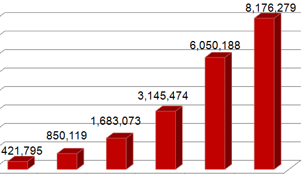

| Relational In-Memory Database Performance |  Faster than Fast! |
Welcome to the online Quick Start Guide for
Oracle TimesTen In-Memory Database
and
TimesTen Application-Tier Database Cache!
Oracle TimesTen In-Memory Database (TimesTen) is a memory-optimized relational database that provides applications with the instant responsiveness and very high throughput required by today's real-time enterprises in a wide range of industries. A TimesTen database resides entirely in memory at run time and is persisted to disk storage for the ability to recover and restart. Applications access the TimesTen database using the JDBC, ODBC, OCI and/or Pro*C/C++ interfaces. TimesTen is extremely fast and it is fully transactional, persistent, and highly available with transactional replication.
TimesTen is typically deployed in the middle-tier with the applications; it can be run as a stand-alone database or as an Application-Tier Database Cache (TimesTen Cache) for an Oracle database. Using TimesTen Cache provides applications the power of SQL, the speed of RAM and the reliability of a proven product with automatic data synchronization between theTimesTen cache tables and the back-end Oracle database.
The Quick Start Guide includes the following areas of information to help you get started quickly:
- 1. CONFIGURATION and SETUP
- Provides tutorials on how to properly install and manage TimesTen instances, as well as how to create and configure TimesTen databases, set up user accounts and privileges, start and stop TimesTen database processes, connect to a TimesTen database, and execute a variety of database operations. In addition, you will learn how to use TimesTen Cache to configure cache groups in the middle tier for caching a subset of your Oracle database, how to configure TimesTen Replication to achieve high availability in the middle tier, and how to configure your cache database with a Java EE Application Server and OR mapping tools.
- 2. TOOLS and UTILITIES
- Provides tutorials on how to load data, how to use TimesTen Utilities and Built-ins and how to run database tools, such as Index Advisor, SQL Developer, and Enterprise Manager.
- 3. SAMPLE PROGRAMS
- Provides sample programs in Java, C++ and C which show you how to develop database applications that use TimesTen databases. These programs are grouped by data access interface including JDBC, ODBC, OCI, Pro*C, TTClasses (C++), and PL/SQL. Each program comes with a description, source code, and instructions for compiling and running on your platform of choice.
- 4. BEST PRACTICES
- Summarizes the best practices you should follow to achieve the best performance and availability for your applications.
- 5. RESOURCES
- Provides additional resources available to you on various Oracle Websites
where you can find the latest updates on product release downloads, technology white papers,
user discussion forums on Oracle Technology Network, online documentation, etc.
The Quick Start guide may be updated from time to time. For the latest version, visit the TimesTen Quick Start page on OTN